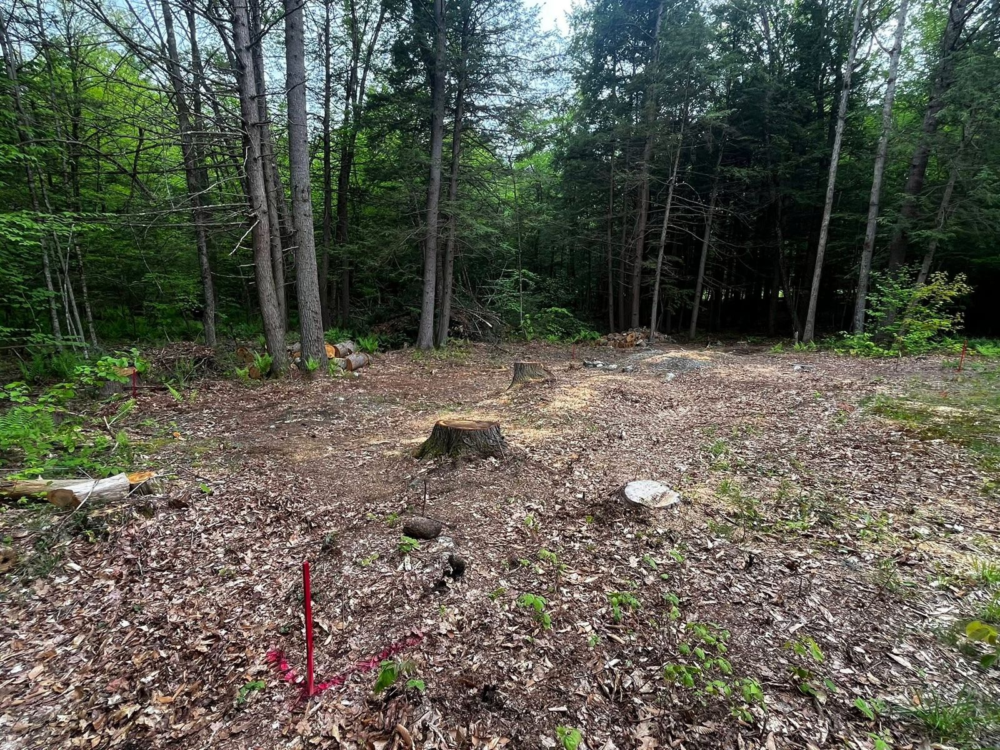

Site Prep & Monolithic Slab for a Steel Garage – Swanzey, NH
A 41' x 31' monolithic pad for a prefab steel 2-car garage. The wet site turned to swamp partway through, so we excavated, built a solid gravel base and poured a monolithic slab ready for the building.

Before: wooded lot with stumps cleared and the pad surveyed – Swanzey, NH